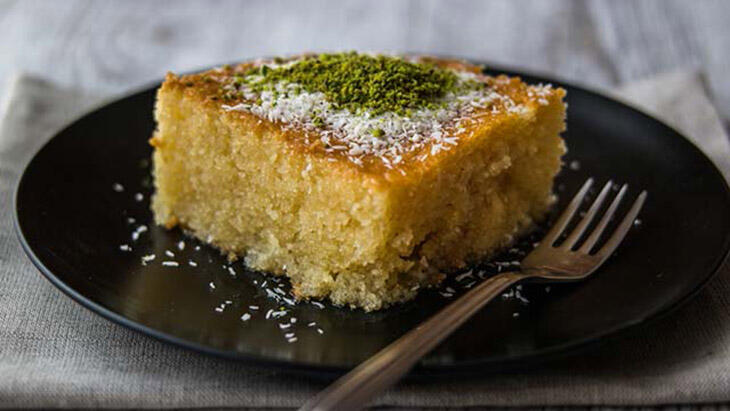

Revani
Een zoete cake gemaakt griesmeel en siroop. Stamt af uit de Ottomaanse keuken.
Ingrediënten
- 1,5 waterglas zonnebloemolie 300 ml
- 1,5 waterglas volle yoghurt 300 ml
- 4 eieren
- 3 waterglazen suiker 600 gr
- 1 zakje vanillesuiker
- 1,5 waterglas griesmeel 300 ml
- 3 waterglazen meel 600gr
- 1 zakje bakpoeder
- 6 waterglazen suiker 1200 gr
- 7,5 waterglazen water 1500 ml
- halve citroen
- boter of zonnebloemolie om het in te vetten
Bereidingswijze
- Doe de zonnebloemolie, yoghurt, eieren, suiker en vanillesuiker in een kom en roer dat tot één mengsel.
- Voeg daarna de griesmeel, meel en bakpoeder bij het mengsel. Wederom goed roeren.
- De bakplaat goed invetten.
- Giet het beslag in een bakplaat en laat dit 45 minuten bakken in 160 graden.
- Nadat het is gebakken, haal je de cake uit de oven en laat het een half uurtje staan.
- Als de cake is afgekoeld, snijd je de cake.
- Voor de stroop: Pak een pan en doe daar de suiker in.
- Doe er water bij en roer dit goed door
- Laat dit een half uur koken.
- Doe de sap van een halve citroen in de pan met de suiker en water. Laat dit 15 minuten koken. Als dit lauw wordt, giet je het over de cake heen.

Tip Lekker met gestampte pistachenootjes, kokosnootschaafsel of limoen.